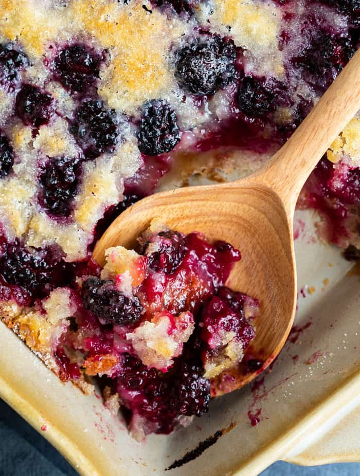

Blackberry Cobbler

Description
Growing up with my grandma the kitchen was filled with the aroma of her famous blackberry cobbler. When she passed away she shared the recipe with only me. For years I kept the recipe a secret. I am finally ready to share it all with you.
Ingredients
- 1 cup all purpose flour
- 1 tsp baking powder
- 1/2 tsp salt
- 6 tbsp cold butter
- 1/4 cup boiling water
- 2 tbsp cornstarch
- 1/4 cup cold water
- 1 tbsp lemon juice
- 4 cups blackberries
Steps
- Preheat oven to 400 F. Line a baking sheet with foil.
- In a large bowl, mix the flour, 1/2 cup sugar, baking powder, and salt. Cut in butter until the mixture resembles coarse crumbs. Stir in 1/4 cup boiling water until mixture is evenly moist
- In a separate bowl, dissolve the cornstarch in cold water. Mix in remaining 1 cup sugar, lemon juice, and blackberries. Transfer to a cast iron skillet and bring to a boil, stirring frequently. Drop dough into the skillet by spoonfuls. Place skillet on the foil lined baking sheet.
- Bake 25 minutes until dough is golden brown.